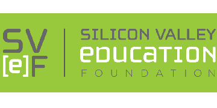

A showcase of my work and accomplishments
Here at Lumina/Onto I currently work remotely to improve upon their software. Using C# I make any adjustments or add on any features they would like onto their software for circuit board testing. During the summer I collaborated with several engineers and assisted in the testing of electronic circuit boards and power supply modules. Afterward, I would contribute to updating and revising various test procedures. Additionally, configuring computer systems, including installation of hardware components and software applications..
At Cepheid I was tasked with two projects during my internship. The first project involved collaborating with the firmware verification team to perform several tests on a company product. These tests consisted of functional tests, with optical and thermal calibration. The second project was validating the manufacturing software. I would ensure no gap between the test protocol and the software.
Silicon Valley Education Foundation is a non-profit organization dedicated to improving STEM education in the Silicon Valley region, specifically hoping to provide underserved students with an equal opportunity for success.
